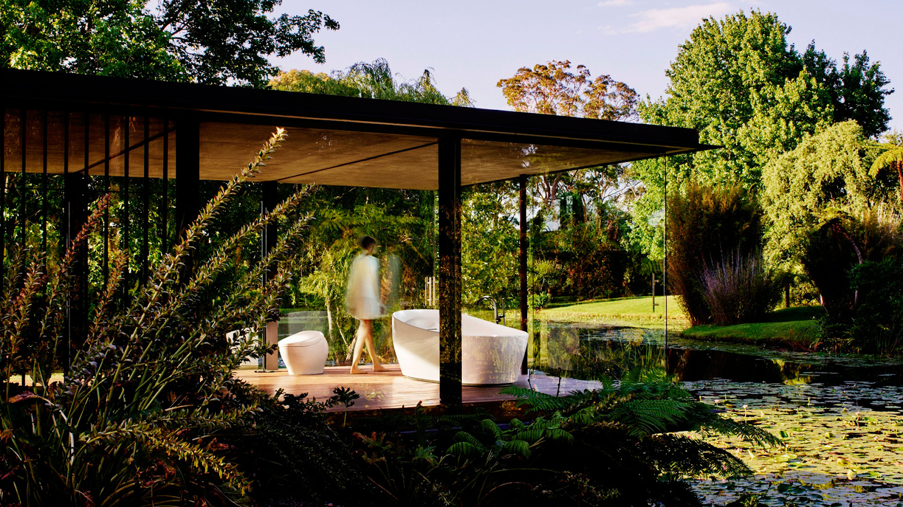
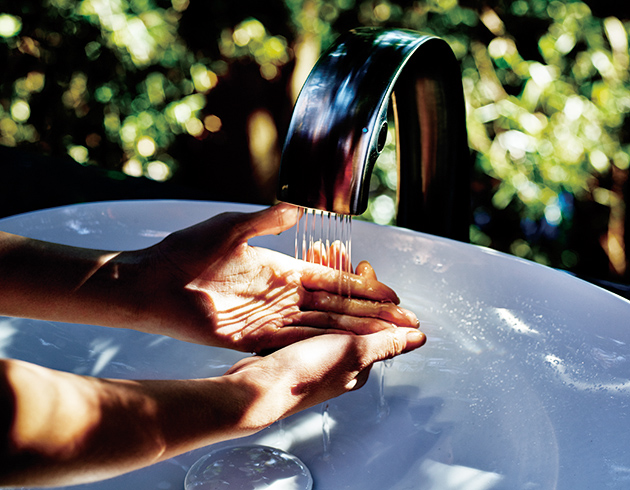

TOTO ( Le nom de la société est une abréviation des deux mots japonais tōyō tōki)
formant son nom complet et signifiant « porcelaine orientale. »)
C’est le premier producteur japonais de produits sanitaires et son nom est synonyme de progrès
dans la salle de bains depuis sa fondation en 1917.
Ses innovations technologiques et ses normes de qualité élevées en ont fait un emblème et une
marque populaire au Japon.
Comme les consommateurs européens exigent toujours plus de luxe et de satisfaction dans la salle de
bains,
le moment est propice pour les produits sanitaires les plus sophistiqués au monde d'entrer sur ce
marché
en transformant la salle de bains en un lieu de rafraîchissement et de méditation.
La Clean Technology de TOTO est sur le point de révolutionner l'art de vivre dans la salle de bains
en Europe.

Technologie : TOTO s’est imposé comme l’entreprise numéro un dans la conception de salles de bains au Japon. Elle s’engage à apporter à l’univers des salles des bains ce que la technologie a su apporter au divertissement domestique : afin de rendre les deux inséparables.
Bien-être : En Occident, on dit qu’un bain sert à nettoyer le corps mais au Japon, on dit que le bain sert à nettoyer son âme. TOTO s’engage à réduire l’écart entre les cultures japonaise et européenne dans la façon dont elles appréhendent la salle de bains, en adoptant l’attitude éclairée de l’Orient et en la rendant accessible à un tout nouveau marché avec un niveau de qualité et d’authenticité sans précédent.
Design : L’entreprise préfère suivre la voie du design classique, en adoptant une approche japonaise qui consiste à associer la forme et la fonction avec élégance et beauté, ce qui convient parfaitement aux salles de bains européennes.
Luxe : TOTO incarne la tradition et l’artisanat, des notions qui correspondent à la vision du luxe qu’ont les Japonais. L’entreprise incarne également l’esprit innovant nécessaire pour rester au sommet pendant longtemps, avec des normes d’excellence toujours plus élevées.


